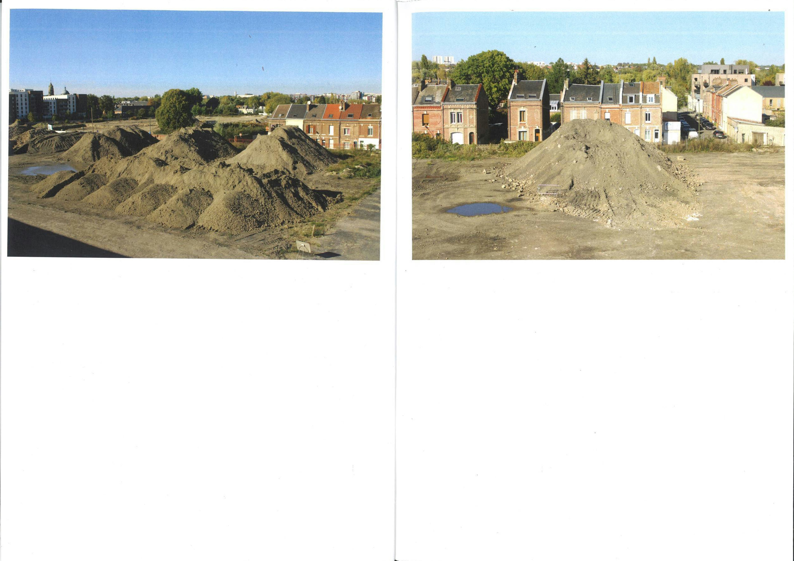
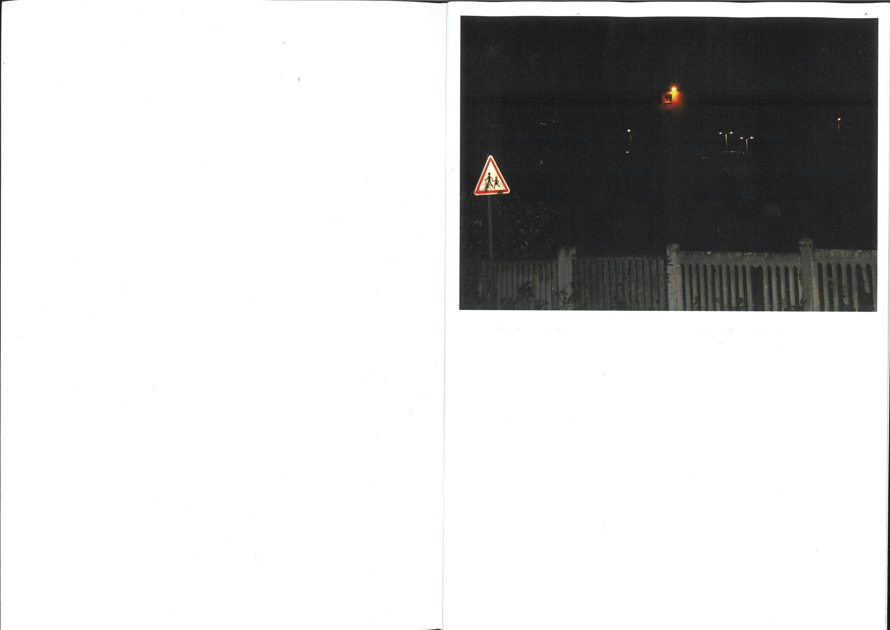
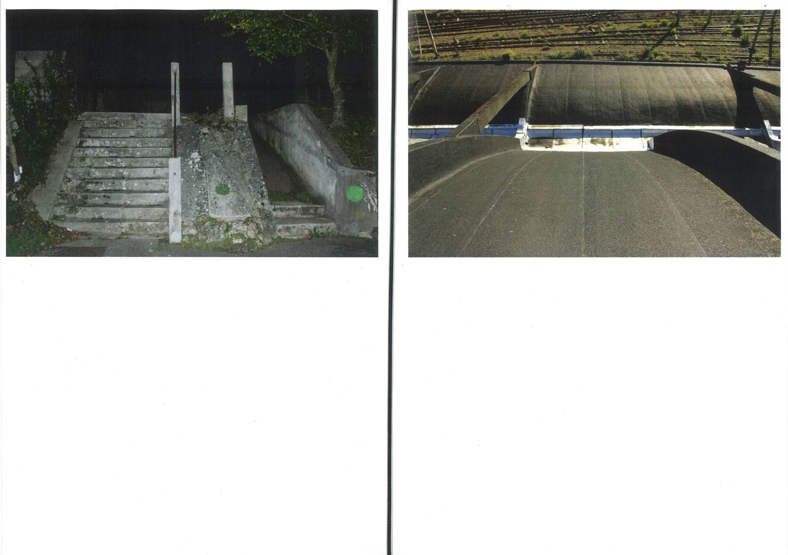
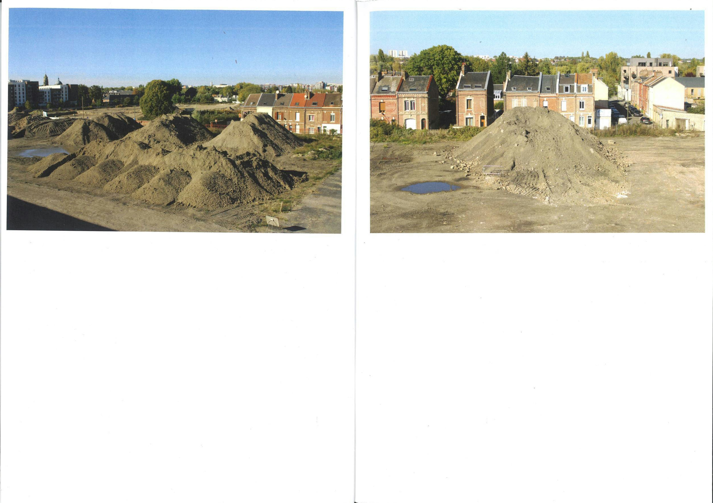
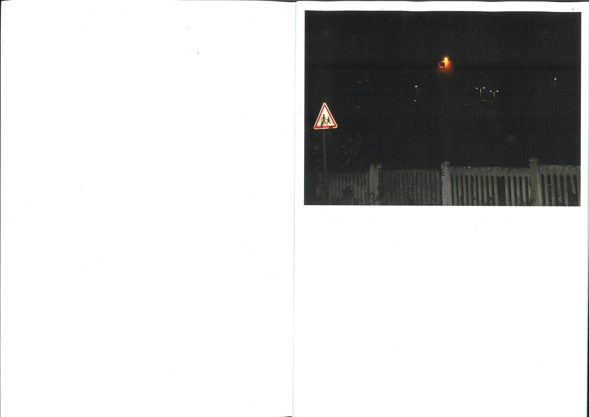
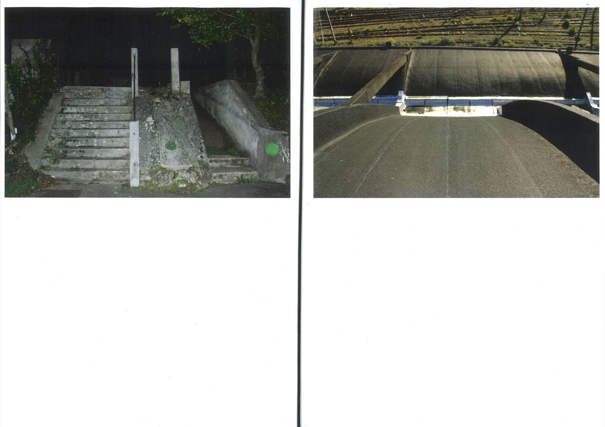
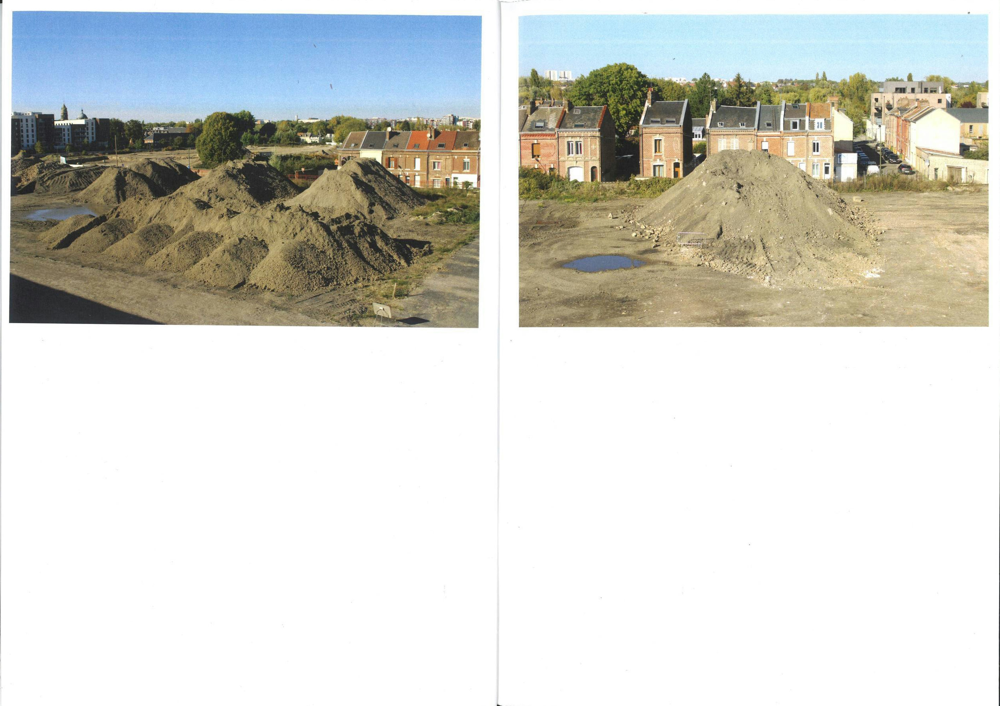
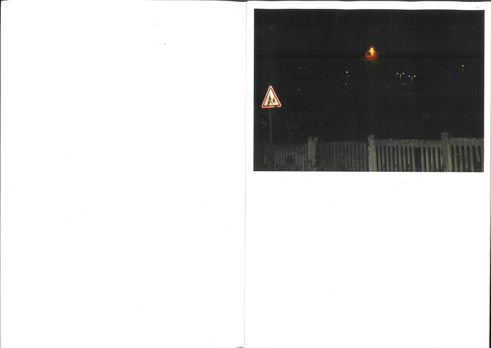
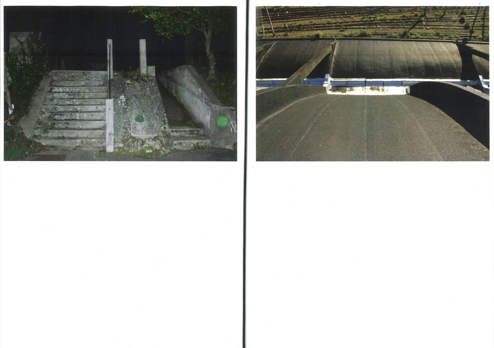

Lucas LESAULNIER
design graphique & autres
à propos
Vécu & rêvé (2022).
recueil photographique, qui traite du rapport d’échelle entre l’humain, et la ville.
Impression laser, 12 pages, 210x297mm (A4), reliure élastique.
  
 




